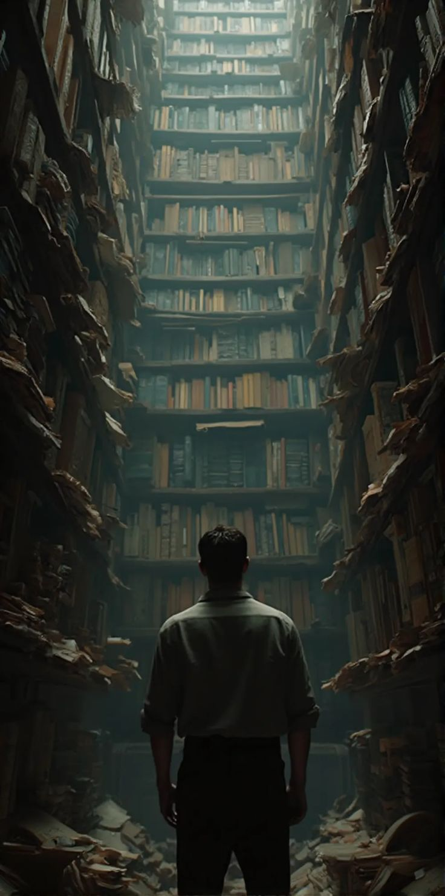
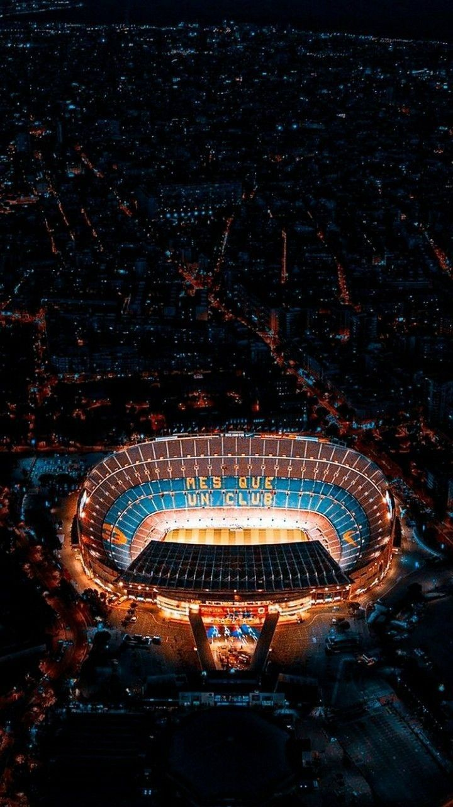

Mes Divertissements
Ce qui me permet de décompresser et de trouver de l'inspiration au-delà du code.

01
Analyse & Stratégie
Prendre du recul sur les marchés et affiner mes analyses est une véritable passion intellectuelle.
02
Immersion Sonore
Rien de tel qu'une bonne playlist pour s'évader ou se concentrer sur de nouveaux défis.

03
Esprit de Compétition
Le gaming me permet de décompresser tout en gardant mes réflexes aiguisés.
04
Découverte & Veille
Toujours à l'affût de nouvelles connaissances pour nourrir ma curiosité.